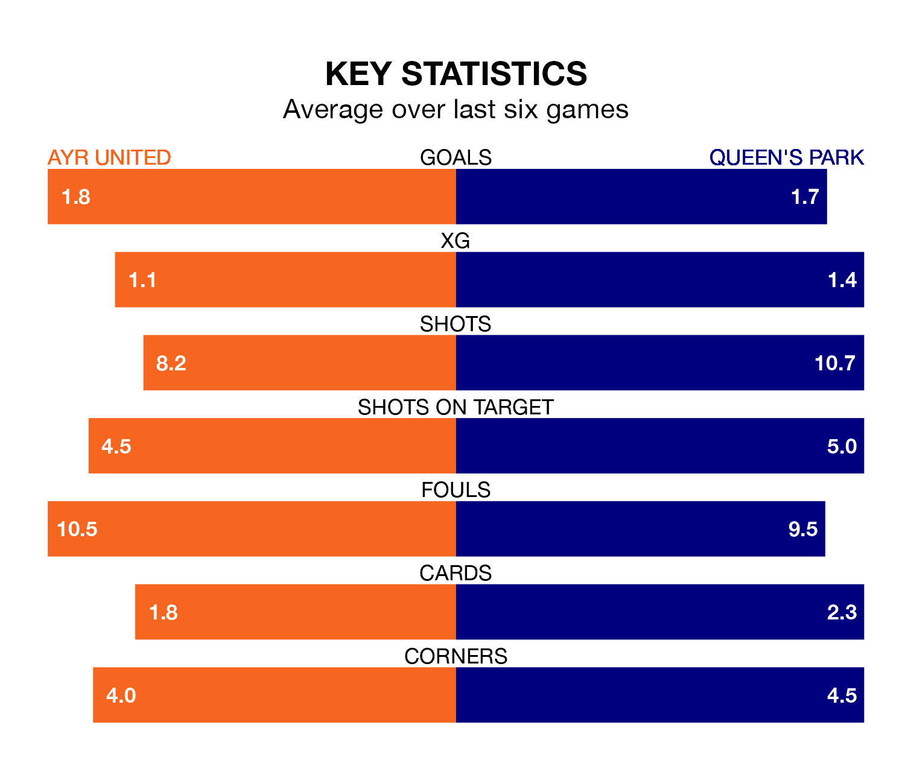

Struggling Ayr United face Queen's Park at Somerset Park on Saturday looking to build on a win in their last league outing.
After securing all three points with a 2-1 victory over Inverness CT on March 16, the Honest Men sit seventh in the Championship.
They travel to play a Queen's Park side eighth in the standings, who were held in their last match, 0-0 against Raith Rovers.
In Ruari Paton, Queen's Park have one of the league's most on-form strikers so far this season. He has notched 15 goals in 29 appearances, to sit second in the scoring charts.
His goal rate of one every 172 minutes is quicker than that of Jamie Murphy, Ayr's top scorer with a goal every 295 minutes, and a total of six goals in 24 games.
With 40 goals in 28 games so far this season, United are scoring at the league's average rate with 1.4 goals per game. And they are conceding more than average, letting in 51 goals at a rate of 1.8 per game.
The Spiders are also average scorers, with 1.4 goals per game. They have conceded 1.6 goals per game.
In the last 10 years, Ayr and Queen's Park have played each other on 12 occasions. Ayr won eight of them, Queen's Park one, and they drew three times.
On average, the Honest Men scored 2.5 goals and the Spiders 1.0 in those matches.
Their last meeting was on January 27, when Ayr won 2-1 away.
The Honest Men are in mixed form in the Championship, with three wins and three losses from their last six games.
With a win and four draws over that period, the visitors' form is slightly worse – they have taken seven points from 18, compared to the home side's nine.
Saturday's match will be refereed by Colin Steven, who has taken charge of seven Championship games so far this season, issuing no red cards and booking 17 players. He has not awarded any penalties.
The last Ayr game Steven refereed was a 2-1 away loss to Arbroath on September 2. His last Queen's Park match was their 6-0 win at home against Arbroath on February 27.
Updated: 10:19 (UTC), 22/03/24